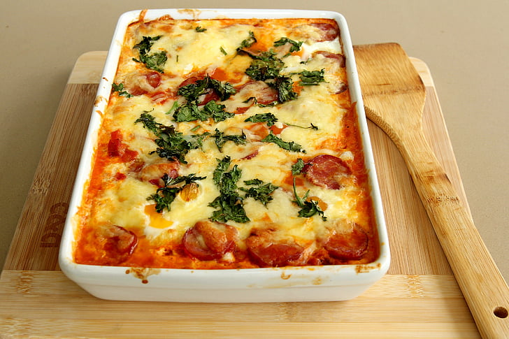

Lasagna

Description
Lasagna is a very difficult and tedious dish to make, however it is an
absolute classic Italian staple. This recipe will make it a lot easier so
you don't need to spend hours prepping. There isn't a ton of ingredients
either making it the perfect dish to whip up on a weekend.
Ingredients
- 1 pound lean ground beef
- 1 jar spaghetti sauce can be homemade or store-bought
- 32 ounces of cottage cheese
- 3 cups shredded mozzarella cheese, divided
- 2 eggs
- 1/2 cup grated parmesan cheese
- 2 teaspoons dried parsley
- Salt to taste
- Ground black pepper
- 9 lasagna noodles
- 1/2 cup water
Steps
- Gather all ingredients and preheat the oven to 350 degrees F.
-
Heat larget skillet over medium high heat. Cook and stir ground beef in
hot skillet until browned, 8 to 10 minutes. Drain and discard grease.
Stir in spaghetti sauce and simmer for 5 minutes.
-
Combine cottage cheese, 2 cups of mozzarella cheese, eggs, 1/2 of grated
Parmesan cheese, dried parsley, salt, and pepper in a large bowl.
-
Spread 3/4 cup of sauce in 9x130inch baking dish. Cover with 3 uncooked
lasagna nooddles, 1 3/4 cups of cheese mixture, and 1/4 cup sauce;
repeat layers once more. Top with 3 remaining noodles, sauce,
mozzarella, and Parmesan cheese. Pour 1/2 cup water along edges of dish.
Cover tightly with aluminum foil.
-
Bake in preheated oven for 45 minutes. Uncover and cake for additional
10 minutes. Let stand 10 minutes before serving.
- Serve and enjoy!
Home